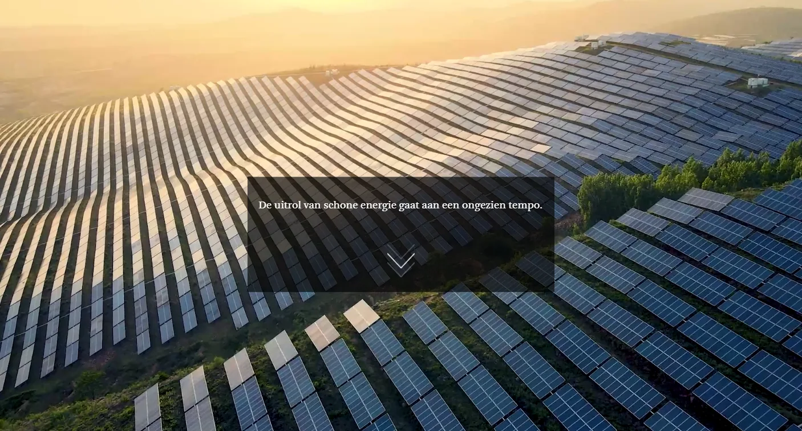
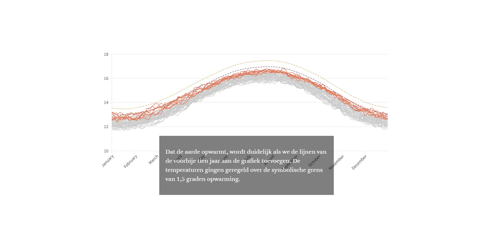
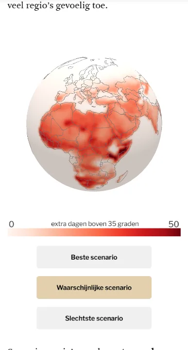
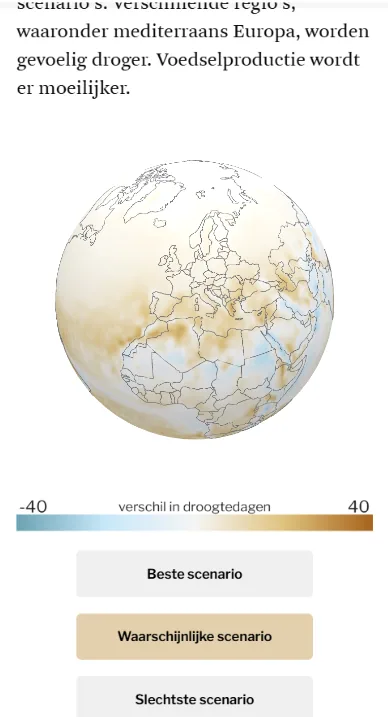

On the eve of the UN climate summit COP28 in Dubai, we mapped the double race: the lightning-fast roll-out of renewable energy against the escalating disruption of the climate.

More than ten Flourish infographics carry the story. I made the data visualisations together with Andy, and the text came from Ine Renson. Joppe built two interactive 3D globes in Three.js.



Made with
Made by
- Ine Renson
- Text
- Andy Stevens
- Data visualisation & development
- Tina Boeykens
- Data visualisation & development
- Joppe Rabijns
- Development